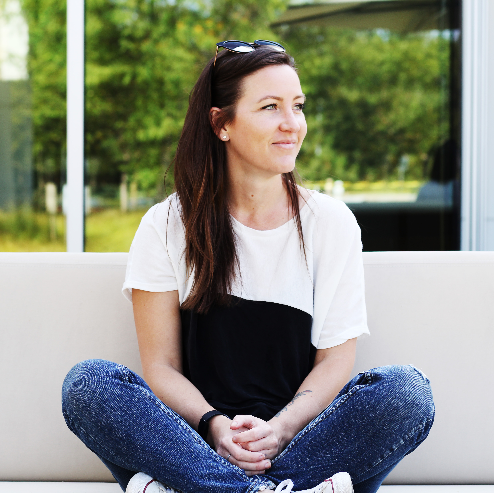

About Me

Hi, I’m Sera, a web developer passionate and driven web developer with a unique
background in customer service and hospitality. My journey into web development
began with a desire to combine my creativity and problem-solving skills to build
impactful and user-friendly websites and apps.
What I bring to the table:
Customer-Centric Design:
With years of experience in roles that prioritize
customer satisfaction, I understand the importance of user experience. I create
websites that are not only visually appealing but also intuitive and accessible,
ensuring that your customers have a seamless and enjoyable interaction with your brand.
Attention to Detail:
My background as a hair stylist and baker has honed my
ability to pay close attention to detail. Whether it's perfecting a haircut or
ensuring the quality of baked goods, I bring this meticulousness to web development,
ensuring that every element of your website is polished and functional.
Problem-Solving:
Working as a travel agent required me to coordinate complex
itineraries and resolve issues on the fly. This has equipped me with strong problem-solving
skills and the ability to adapt to challenges, ensuring that your web projects run smoothly
and efficiently.
Strong Communication:
My roles in customer-facing positions have developed my ability
to communicate effectively with clients and team members. I can translate technical jargon
into clear, understandable terms, ensuring that all stakeholders are aligned and informed
throughout the project lifecycle.
Organizational Skills:
Planning and executing detailed travel itineraries and managing
a busy bakery have taught me the importance of organization. I bring this skill to web
development, managing projects with precision and ensuring timely delivery.
I believe my diverse skill set and enthusiasm for web development would be an asset to your company.
Let's work together to create innovative solutions that drive your business forward.
Contact Me.
What do I like to do in my spare time?
Brain Games NYT: Wordle, Connections, Strands, Mini Crossword, Sudoku
Spend Time Outdoors: Camping, Snowboarding, Rock Climbing, Paddleboarding, Playing with my cat